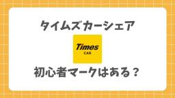
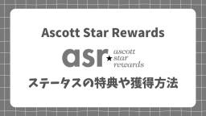

nrtlog.com
https://nrtlog.com/
nrtlog.com
フィード

タイムズカーシェアに初心者マークはある？ついてない？どこにある？タイムズ愛用の筆者が画像付きで解説！
nrtlog.com
タイムズカーシェアに初心者マークはある？車体には付いておらず用意も原則なし。一部の車両で車内に入っている場所と、免許取得1年未満の人が自分で用意する方法を、タイムズ愛用の筆者が画像付きで解説！
1日前

【2026年11月】Airalo(エラロ)のクーポンコード！初回・2回目以降も使える限定クーポンを紹介！使い方も写真付きで紹介！
nrtlog.com
海外旅行eSIMアプリ・Airalo(エラロ)の2026年最新割引クーポンコードを大公開！当サイト限定の初回15%・2回目以降10%OFFを掲載！実際の使い方やエラーで使えない時の解決策まで写真付きで徹底解説！
1日前

Ascott(アスコット)のホテル一覧！国内・海外の主要ホテルをブランド別に紹介！
nrtlog.com
アスコットのホテル一覧。アスコット丸の内東京やシタディーンハーバーフロント横浜など国内の主要施設と、シンガポール・バンコクなど海外の主要ホテルをブランド別に紹介！5ブランドの違いやお得に泊まる方法も解説！
2日前
香港の自動出入国審査「e道(e-Channnel)」登録方法！日本人の登録条件やアプリでの登録方法を実際に行った筆者が徹底解説！
nrtlog.com
香港の自動出入国審査「e道（e-Channel）」の登録方法を徹底解説！日本人の登録条件や登録アプリGo Hong Kongの使い方、ANA・JAL上級会員での条件、アプリ登録時の顔認証などの注意点、入国時の使い方まで紹介！
3日前

【独自】プライオリティパスが改悪？Prestigeの無制限利用が終了へ！2027年1月6日からの変更点を解説
nrtlog.com
プライオリティ・パスの直接購入プランが2027年1月6日に改定！Prestigeは年会費499ドルに値上げされ、無制限利用が年20回までに。クレジットカード付帯への影響と、旧条件を維持する方法を解説！
4日前
【駅直結】シタディーンハーバーフロント横浜を正直レビュー！珈琲館の朝食やキッチン付きのお部屋を写真付きで紹介！
nrtlog.com
シタディーンハーバーフロント横浜の宿泊記レビュー！日本大通り駅直結&JR関内駅や中華街、横浜スタジアム、赤レンガ倉庫にも抜群のアクセス！キッチン付き客室の設備やアメニティ、珈琲館での朝食ビュッフェの様子まで写真付きで詳しく紹介！
4日前

セゾンコバルト・ビジネス・アメックスの審査は厳しい？個人事業主や副業・学生でも作れる？実際の限度額も紹介！
nrtlog.com
セゾンコバルト・ビジネス・アメックスの審査は厳しい？個人事業主や副業・学生でも作れるのか、申し込み条件や審査の流れ、結果が届くまでの日数、実際の限度額と落ちる理由を、実際に発行した筆者が解説！
4日前

成田空港T1の「IASS EXECUTIVE LOUNGE 1」へ潜入！無料のビールや入り方・料金や対象カードについて画像付きで徹底解説！
nrtlog.com
成田空港第1ターミナル中央ビルのカードラウンジ「IASS EXECUTIVE LOUNGE 1」に潜入レビュー！場所や行き方、営業時間、料金、無料で入れる対象クレジットカードを解説！受付でもらえる無料のビールや電源・Wi-Fi、プライオリティパスでの利用、到着時の使い方も紹介！
5日前

セゾンコバルト・ビジネス・アメックスの評判は？年会費無料のメリット・デメリットや還元率を実際に使って解説
nrtlog.com
セゾンコバルト・ビジネス・アメックスの評判を、良い口コミ・悪い口コミの両方を紹介！年会費永年無料のメリットと、保険なし・基本還元率0.5%のデメリット、向いている人・向いていない人を実際に使っている筆者が解説！
5日前

【2026-27】雪マジが使える東北のスキー場まとめ！岩手・山形など15施設と仙台からのアクセス、おすすめを紹介！
nrtlog.com
【2026年-2027年シーズン版】雪マジが使える東北のスキー場まとめ。青森・岩手・宮城・秋田・山形の対象ゲレンデ15施設を、無料で利用できる日やエリア別のおすすめ、仙台からのアクセスとあわせて解説！曜日限定の施設など東北で使うときの注意点も紹介！
6日前

KKdayのeSIMは安すぎる？！口コミや使い方を実際に韓国で使って紹介！
nrtlog.com
KKdayのeSIMは安すぎる？韓国の料金をKlookやAiralo、Holaflyと比較し、実際に韓国で使った使用感と評判・口コミ、使い方・設定方法、購入前の注意点まで紹介！クーポンで安く買う方法も解説！
6日前

Ascott Star Rewardsを徹底解説！ステータスの特典や獲得方法、期間やステータスマッチまで紹介！
nrtlog.com
Ascott Star Rewards(アスコット スター リワーズ)を徹底解説。ステータスの特典や獲得条件、ポイントの貯め方と使い方、ステータスマッチの対象や申請方法、裏技まで紹介！dカードの特典でシルバー会員になる方法も解説！
7日前

【2026-27】雪マジが使える新潟のスキー場まとめ！苗場・かぐら・湯沢中里など21施設と東京からのアクセス、おすすめを紹介！
nrtlog.com
【2026年-2027年シーズン版】雪マジが使える新潟のスキー場まとめ。苗場・かぐら・湯沢中里など対象ゲレンデ21施設を、無料で利用できる日やエリア別のおすすめ、東京からのアクセスとあわせて解説！平日のみ無料の施設が多いなど新潟で使うときの注意点も紹介！
7日前

【2026-27】雪マジが使える北陸のスキー場まとめ！富山・石川・福井7施設とアクセス、おすすめを紹介！
nrtlog.com
【2026年-2027年シーズン版】雪マジが使える北陸のスキー場まとめ。富山・石川・福井の対象ゲレンデ7施設を、無料で利用できる日やエリア別のおすすめ、金沢・富山からのアクセスとあわせて解説！平日のみ無料の施設など北陸で使うときの注意点も紹介！
8日前
マリーナベイ・サンズの展望台に無料で入る方法！楽天・ANAのステータスマッチを徹底解説！
nrtlog.com
マリーナベイ・サンズのステータスマッチを徹底解説！楽天ダイヤモンドやANAのダイヤモンド・プラチナ・SFC、三井住友カード、JCBのステータスからエリートやプレステージにマッチでき、展望デッキの無料チケットがもらえます。条件や期限、やり方まで紹介！
8日前
【ネタバレ】HISミステリーツアーの行き先はどこ？ブラックフライデーは本当にお得？過去の結果も大公開！
nrtlog.com
【ネタバレ注意】HISのミステリーツアーを徹底解説！実際の行き先を独自のノウハウと過去の実績を元に予想！通常ツアーと比べたお得度や参加における注意点、国内ミステリーバスツアーや申し込み方法も！
9日前
【2026-27】雪マジが使える中国地方のスキー場まとめ！広島・大山など9施設と広島からのアクセス、おすすめを紹介！
nrtlog.com
【2026年-2027年シーズン版】雪マジが使える中国地方のスキー場まとめ。広島・鳥取・島根・岡山の対象ゲレンデ9施設を、無料で利用できる日やエリア別のおすすめ、広島からのアクセスとあわせて解説！曜日限定の施設など中国で使うときの注意点も紹介！
9日前
eSIM-sanはやめとけ！口コミ・評判と実際に使ってわかったメリット・デメリット、もっと安いおすすめeSIMを紹介！
nrtlog.com
eSIM-sanはやめとけと言われる理由を口コミと料金で検証。韓国・台湾5日間の料金をAiralo・Holafly・Klookと比較し、日次プランの仕組みやアプリがない不便さなど、安さだけで選ぶと損するポイントとさらに安い・お得なおすすめeSIMを紹介！
9日前
Suicaの新キャラクターはB案の紫のうさぎ！「毒うさぎ」と呼ばれる理由と投票結果、愛称の応募方法を解説！
nrtlog.com
Suicaの新キャラクターがB案の紫のうさぎに決定。投票結果や「毒うさぎ」と呼ばれる理由、ファンアートで人気になるまでの賛否の経緯、愛称の応募方法、ペンギンが2027年3月31日に卒業するまでの流れを解説！
10日前
【2026-27】雪マジが使える岐阜のスキー場まとめ！奥美濃・飛騨など11施設と名古屋からのアクセス、おすすめを紹介！
nrtlog.com
【2026年-2027年シーズン版】雪マジが使える岐阜のスキー場まとめ。奥美濃・飛騨の対象ゲレンデ11施設を、無料で利用できる日やエリア別のおすすめ、名古屋からのアクセスとあわせて解説！平日のみ無料の施設が多いなど岐阜で使うときの注意点も紹介！
10日前
【2027年】中国の観光ビザ免除の延長は？今後の予想と代替のトランジットビザ観光方法を紹介！
nrtlog.com
中国ビザ免除の最新動向と今後の再開・延長予想を徹底考察！ビザなし渡航が不可となった場合の対策として、144時間トランジットビザ免除を活用した上海・深圳などの観光モデルや中国東方航空などの最新情報も紹介！
10日前
【徹底比較】タイムズカーと三井のカーシェアーズはどっちがいい？料金やステーション数・車種をどちらも愛用する筆者が徹底解説！
nrtlog.com
タイムズカーと三井のカーシェアーズはどっちがいい？料金・距離料金・学生プランを両方使って徹底比較。6時間ドライブは三井が1,200円以上安いなど、使い方別のシミュレーションで違いやお得に使う方法を解説！
11日前
ベストウェスタンが国内で消滅！？ポラリス運営の6軒がKOKO HOTELSへリブランド！リワーズは12月1日で終了
nrtlog.com
ポラリス運営のベストウェスタン6軒がKOKO HOTELSへ順次リブランド！12月1日に千歳・大阪北浜・大阪塚本が先行切替で、Best Western Rewardsは11月30日で終了。対象ホテルと切替時期、後継のirodori passを解説！
12日前
OMOTENA(オモテナ)のリゾートバイトとは？特徴やメリット・デメリット、登録方法を徹底解説！
nrtlog.com
リゾートバイト派遣のOMOTENA(オモテナ)を徹底解説！ホテル・旅館に特化した求人の特徴や、実務経験者のコーディネーターによる専任サポート、寮・食事や給与前払い、登録から就業までの流れ、メリット・デメリットまで！実際に担当者に問い合わせて紹介！
12日前
【2026-27】雪マジが使える群馬のスキー場まとめ！草津・水上など6施設と東京からのアクセス、おすすめを紹介！
nrtlog.com
【2026年-2027年シーズン版】雪マジが使える群馬のスキー場まとめ。水上・草津・嬬恋の対象ゲレンデ6施設を、無料で利用できる日やエリア別のおすすめ、東京からのアクセスとあわせて解説！平日のみ無料の施設など群馬で使うときの注意点も紹介！
12日前
【愛用者が解説】東武鉄道の株主優待乗車証の使い方！安いのはどこ？金券ショップの相場の比較や日光など全線片道がお得な区間を解説！
nrtlog.com
東武鉄道の株主優待乗車証を愛用している筆者が解説。1枚で東武線全線を片道乗れる乗車証の株数別枚数や特急での使い方、日光・鬼怒川などお得になる区間と金券ショップの相場、入手方法と注意点を紹介！
13日前
【2026-27】雪マジが使える福島のスキー場まとめ！猪苗代・裏磐梯など11施設と東京からのアクセス、おすすめを紹介！
nrtlog.com
【2026年-2027年シーズン版】雪マジが使える福島のスキー場まとめ。猪苗代・裏磐梯・会津の対象ゲレンデ11施設を、無料で利用できる日やエリア別のおすすめ、東京からのアクセスとあわせて解説！グランデコやネコマなど平日のみ無料の施設など福島で使うときの注意点も紹介！
13日前
マリーナベイ・サンズは倒壊する？傾きの理由と安全性を実際に行って徹底検証！
nrtlog.com
マリーナベイ・サンズは倒壊する？傾きはトランプをモチーフにした設計が理由！現地で撮影した写真とあわせて、埋立地への不安や名探偵コナン『紺青の拳』の崩落シーンで広まった噂の出どころと、基礎や緊張材などの構造から安全性を徹底検証！
14日前
【徹底比較】プライオリティパスが無料で付く最安のクレジットカードは？用途別におすすめを紹介！
nrtlog.com
プライオリティパスが無料で付くクレジットカードを年会費の安い順に徹底比較！最安は楽天プレミアム、無制限最安はエポスプラチナ・セゾンプラチナ・ビジネス・アメリカン・エキスプレス®・カード。同伴者料金や家族カード、インビテーションの活用まで！
15日前
【2026-27】雪マジが使える長野のスキー場まとめ！志賀高原・白馬など22施設と東京・名古屋からのアクセス、おすすめを紹介！
nrtlog.com
【2026年-2027年シーズン版】雪マジが使える長野のスキー場まとめ。志賀高原・白馬・軽井沢など対象ゲレンデ22施設を、無料で利用できる日やエリア別のおすすめ、東京・名古屋からのアクセスとあわせて解説！平日のみ無料の施設など長野で使うときの注意点も紹介！
15日前